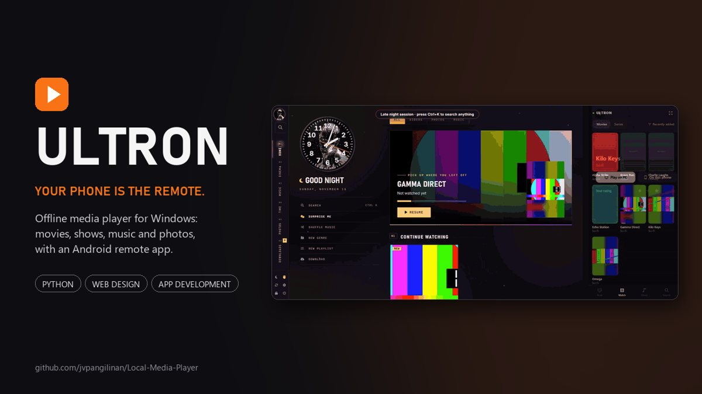
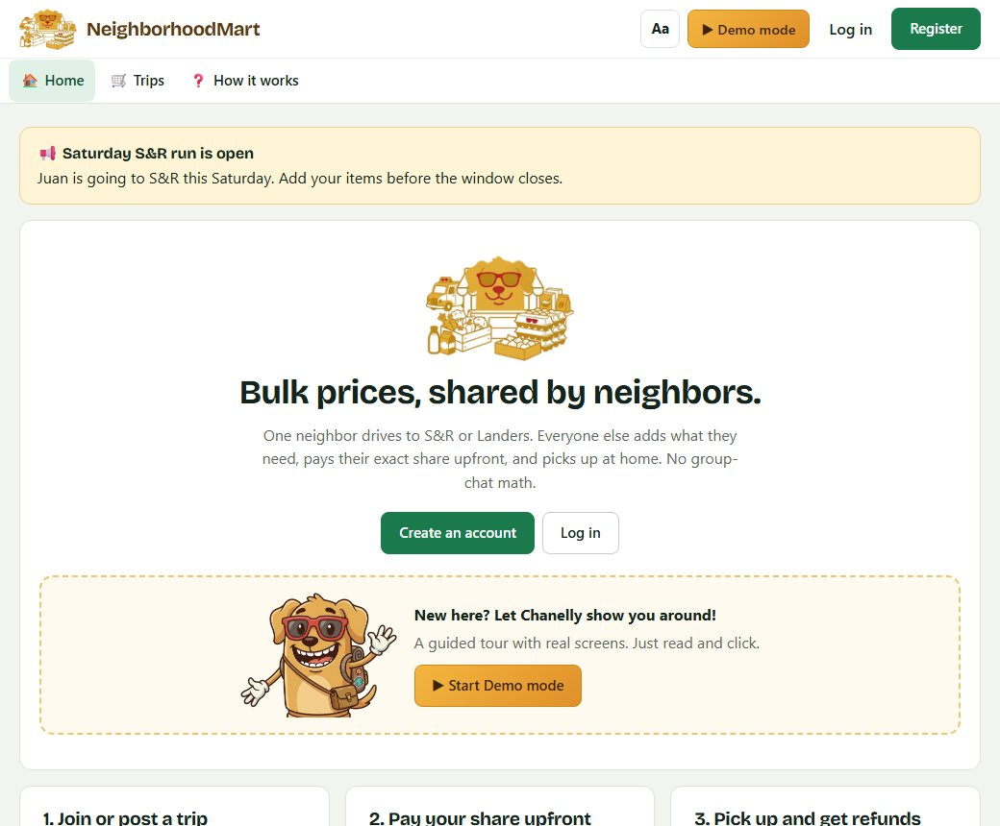

I finish what I start
Every project on this page shipped: two web apps running live, an Android app you can install, and a desktop app with its own phone companion.
Open to remote internships and freelance work
IT student and developer. I build websites, Android apps and Python desktop tools, from idea to live.
pangilinanjohnvincent16@gmail.com · linkedin.com/in/jvpangilinan · github.com/jvpangilinan · jvpangilinan.github.io · Bacoor, Cavite, Philippines
“Tell me about yourself.”
I'm a third-year Information Technology student at San Beda College Alabang, specializing in application development and system design. I build complete products: an Android driver-safety app that won first place at Sensorverse 2026, a Windows media player you control from your phone, and two web apps that are live today.
Before college I trained in technical drafting at Don Bosco Makati. That's where I learned to plan the structure first and then build it properly, and it's still how I work.
Next, I'm looking for a remote internship or junior developer role where I can ship real features for real users while I finish my degree.
“Why should we hire you?”
Every project on this page shipped: two web apps running live, an Android app you can install, and a desktop app with its own phone companion.
I check in with the people I build for, so what ships is what they actually needed. Accessibility comes built in: a simple mode, adjustable text and guided walkthroughs for first-time users.
Prepared statements, CSRF protection and role-based access are where I start, not something I add later.
Six certifications in 2026 (Cisco CCST, three Certiport IT Specialist exams, two GitHub professional certificates) plus 14 LinkedIn Learning courses.
“Walk me through a project you're proud of.”
 Watch the demo
Watch the demo
1st place · Sensorverse 2026Android app
A driver-safety app that keeps drivers awake, slows them down, and calls for help after a crash.
KotlinJetpack ComposeRoomFirebase

Windows app + Android companion
An offline media player for Windows where your phone is the remote.
PythonFlaskSQLitelibmpvJavaScriptJava

Research capstone · Web app
Community bulk co-buying, without the group-chat math.
PHPMySQLJavaScript

Live web app
Inventory and supplier management for a hardware store.
PHPMySQLFirebase
More of what I've been building is on GitHub.
“What have you accomplished so far?”
BS Information Technology · Application Development and System Design
Senior High School, STEM · Creative Design Technology
Junior High School
In the Philippine grading system, 1.00 is the highest grade.
“How do you keep your skills current?”
Cisco · Apr 2026 · valid to 2031
Certiport (Pearson VUE) · May 2026
Certiport (Pearson VUE) · Apr 2026
Certiport (Pearson VUE) · Mar 2026
GitHub Professional Certificate · Sep 2026
GitHub Professional Certificate · Sep 2026
PythonKotlinJavaJavaScriptPHPSQLHTML / CSS
FlaskJetpack ComposeAndroidFirebase / Firestorelibmpv
MySQLSQLiteRoomFirestore
GitGitHubVS CodeAndroid StudioIntelliJ IDEAFirebase ConsoleHostingerDaVinci ResolveClaude Code
“How do you handle disagreements on a team?”
Drafting taught me to plan before I build: the data, the screens, the edge cases. Then I build step by step toward a clear goal.
I show work to the people I'm building for early and often, so what ships is what they needed, not what I assumed.
If I think a decision is wrong, I say so early, with my reasons, and I listen to theirs. Once we decide, I commit to making it work.
“Where do you see yourself in five years?”
I graduate in 2028. In five years I want to be the developer a team trusts with a feature from the first sketch to the release, on the web and on mobile. Until then I'm looking for a remote internship or junior role that fits around my classes, where I can contribute from the first week and learn from experienced engineers.
“What are you working on improving?”
Infrastructure. I build apps comfortably, so this year I've been going deeper on what they run on: networking (Cisco CCST and Cisco's networking foundations courses) and the cloud (AWS Cloud Practitioner prep, core cloud concepts and web APIs).
“Do you have any questions for us?”
Open to remote internships, junior developer roles and freelance work: websites for small businesses, apps for phone or PC, and automation tools.